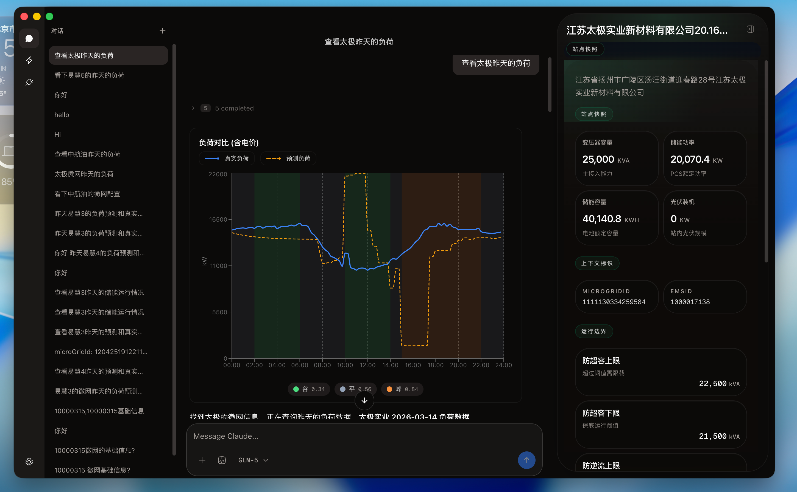
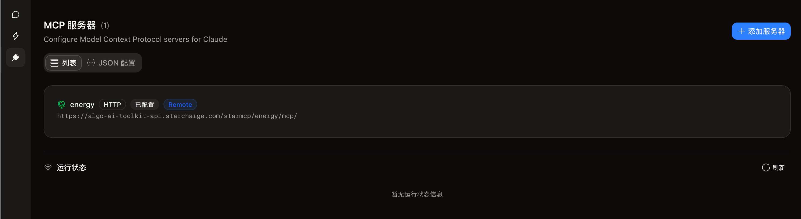
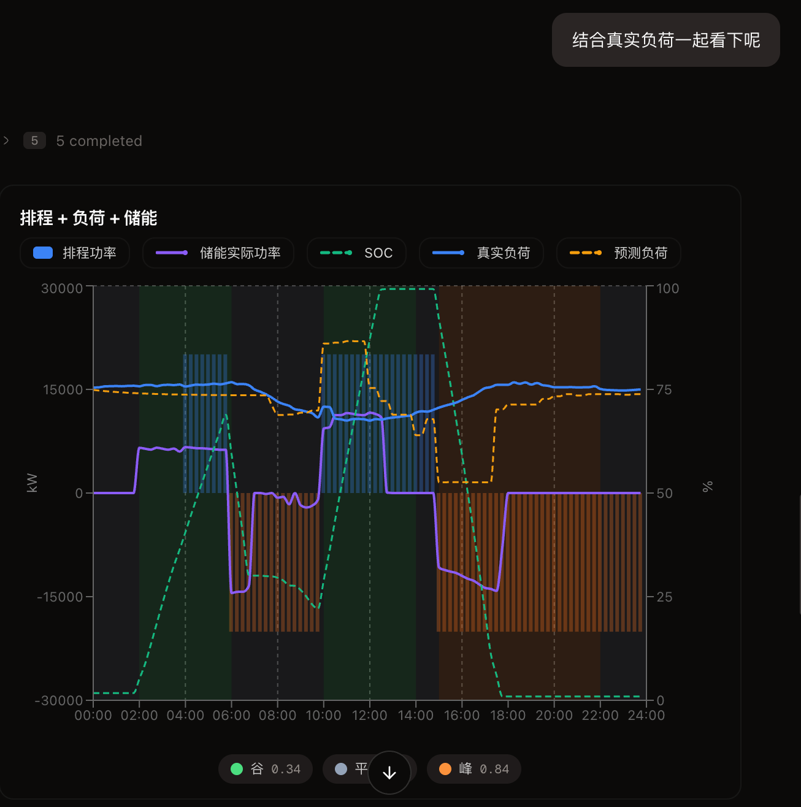
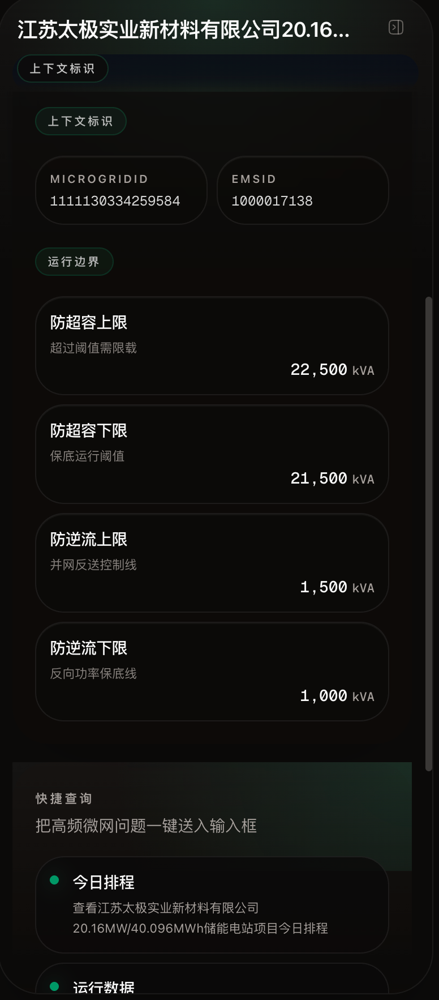

安装与启动
3 类平台
macOS、Windows、Linux 都有清晰安装步骤和首次打开说明。
业务能力
9 个工具
覆盖排程、运行、电价、负荷、回测和排程生成。
诊断方式
7 种模式
从排程查询到异常诊断、收益回测都可自然语言触发。
数据边界
本地优先
对话历史、缓存和统计默认保存在本机 ~/.gridpilot/。
总览
GridPilot 文档总览
先快速认识产品定位、能力范围和文档分区。

GridPilot 是面向微网储能运营的 AI 助手桌面应用，通过自然语言实现排程查询、异常诊断、运行数据分析。
核心能力
- 自然语言交互 — 用日常语言提问，AI 自主推理、调取数据、给出结论
- 9 个专业查询分析工具 — 覆盖排程、运行、电价、负荷、需量、微网档案、回测、排程生成
- 智能数据可视化 — 电价色带、排程柱状图、功率曲线自动融合
- 本地优先 — 数据存储在本地，不上传第三方
文档导航
快速入门
| 文档 | 说明 |
|---|---|
| 快速开始 | 5 分钟上手 GridPilot |
| 安装指南 | 下载安装、首次配置 |
功能指南
| 文档 | 说明 |
|---|---|
| 对话与会话管理 | 对话交互模式与会话管理 |
| AI 服务配置 | AI 服务商配置与切换 |
| 数据服务连接 | 储能数据服务连接与管理 |
| 数据可视化 | 图表系统与可视化说明 |
| 微网上下文面板 | 微网信息面板与快捷操作 |
| 设置与个性化 | 外观、权限、语言等设置 |
领域知识
| 文档 | 说明 |
|---|---|
| 核心概念 | 微网、排程、电价、单位换算等基础知识 |
| 智能诊断模式 | AI 的 7 种诊断分析模式详解 |
| 使用场景 | 典型使用场景与提问技巧 |
帮助
| 文档 | 说明 |
|---|---|
| 常见问题 | 安装、配置、使用问题解答 |
本文档提供详细使用指南，
README提供产品概览。
安装与上手
安装指南
覆盖系统要求、各平台安装步骤与首次启动向导。
系统要求
| 项目 | 要求 |
|---|---|
| 操作系统 | macOS 12+、Windows 10+、Linux |
| 磁盘空间 | ~500MB |
| 网络 | 需要连接 AI 服务和储能数据后端 |
下载
前往发布页面，下载对应平台的安装包。
各平台安装步骤
macOS
- 下载
.dmg文件 - 双击打开，将 GridPilot.app 拖入 Applications 文件夹
- 首次打开安全提示处理：macOS 可能提示"无法验证开发者"
- 打开「系统偏好设置 → 安全性与隐私 → 通用」
- 点击「仍要打开」
Windows
- 下载
.exe安装包 - 双击运行安装程序
- 跟随安装向导完成安装
- 在开始菜单中找到 GridPilot 并启动
Linux
- 下载
.AppImage文件 - 右键文件 → 属性 → 勾选"允许执行"（或在终端运行
chmod +x GridPilot-*.AppImage） - 双击运行
首次启动安全提示
根据当前构建配置，macOS 安装包启用了签名流程，但未启用 Apple notarize 公证；如果构建时提供了 Developer ID 证书，会保留正式签名，否则会回退到 ad-hoc 签名。Windows 和 Linux 构建未在项目配置中启用额外的公证或平台信誉建立流程，因此在首次启动或首次安装时，系统仍可能弹出安全提示。这属于操作系统的常见保护机制，并不一定表示安装包有问题。
macOS：Gatekeeper 首次启动提示
如果 macOS 提示无法验证开发者、阻止打开 GridPilot，可以任选以下方式处理：
- 方案一：在 Applications 中找到
GridPilot.app，右键点击「打开」，然后在二次确认弹窗中继续打开。 - 方案二：打开「系统设置 → 隐私与安全性」，滚动到安全性区域，找到被拦截的 GridPilot 提示，点击「仍要打开」。
- 方案三：如果应用已经拖入 Applications 但仍被隔离，可在终端运行以下命令移除隔离属性：
xattr -cr /Applications/GridPilot.app
执行后重新启动应用即可。请仅在你确认安装包来源可信时使用该命令。
Windows：SmartScreen 阻止安装或运行
如果 Windows Defender SmartScreen 拦截安装包或首次运行，可以按以下方式处理：
- 方案一：在 SmartScreen 对话框中点击「更多信息」，然后选择「仍要运行」。
- 方案二：如果系统限制了应用来源，可前往「设置 → 应用 → 高级应用设置」，放宽“选择获取应用的位置”或相关安装来源限制后再试。
如果仍然无法启动，建议重新下载一次安装包，并确认文件来自可信的发布渠道。
Linux：首次运行权限提示
Linux 平台通常不会弹出与 Gatekeeper 或 SmartScreen 相同的系统提示，但 AppImage 首次运行前必须具备可执行权限。如果双击无响应，请先确认文件已勾选“允许执行”，或执行 chmod +x GridPilot-*.AppImage 后再启动。
首次启动配置向导
首次启动时，GridPilot 会自动打开设置中心，以引导式方式帮助你完成几项前置配置。整个过程以清晰的文字说明和状态提示为主，每一步都可以即时验证，也支持先跳过、稍后再补充。
步骤 1：Claude Code CLI 检测
设置中心会先检查 Claude Code CLI 是否已经安装并且能够被应用访问。如果已经检测到，会显示版本号、安装类型（如 native、npm、bun、homebrew）以及可执行文件路径，表示当前环境可以直接使用；如果没有检测到，则会根据当前平台给出对应的安装命令，帮助你快速完成安装。
安装完成后，可以点击重新检测再次验证。如果系统中存在多个 Claude Code 安装版本，设置中心还会给出冲突提醒和清理建议；在 Windows 环境下，如果缺少 Git 运行环境，也会提示补装 Git for Windows。只要 CLI 已正确加入 PATH，应用就能正常工作。
步骤 2：配置 AI 服务
完成环境检查后，下一步是配置 AI 服务。你可以直接选择内置的预设服务商，也可以手动新增自定义服务商，并填写 API Key、Base URL、模型名称等必要信息。保存并激活后，GridPilot 才能处理聊天请求、执行分析任务，并返回排程查询、异常诊断和运行分析结果。
如果暂时没有准备好密钥，也可以先跳过这一步，之后再到 AI 服务配置 页面中补充设置。
步骤 3：连接储能数据服务
最后一步是连接储能数据服务，让 AI 能真正访问微网排程、运行数据、电价、负荷等业务信息。推荐使用 HTTP 方式接入，只需填入服务地址并完成保存，即可建立数据访问能力。连接成功后，可以通过连接状态或一次简单查询来确认配置已经生效。
完成这一步后，你就可以直接提出诸如“查一下今天的排程”“下午峰段为什么没放电”“看看明天的负荷预测准不准”之类的问题。详细说明见 数据服务连接。
首次启动配置向导的目标，是把环境检查、AI 接入和业务数据接入集中在第一次打开应用时完成，帮助你在几分钟内进入可用状态，而不需要分别到多个设置页面逐项查找。
数据存储
GridPilot 的本地数据（对话历史、缓存等）默认存储于：
~/.gridpilot/
所有数据保存在本地，不会上传到任何第三方服务。
卸载
- 删除应用本体（macOS 从 Applications 拖至废纸篓，Windows 通过控制面板卸载）
- 如不需要保留历史数据，可删除数据目录
~/.gridpilot/
相关链接
安装与上手
快速开始
用三步完成 AI 服务、数据服务和首次提问。
本文档帮助你在 5 分钟内完成 GridPilot 的基本配置并发起第一次对话。
前提条件
- 操作系统：macOS 12+ 或 Windows 10+
- 网络连接：需要能访问 AI 服务和储能数据后端
三步配置
第一步：配置 AI 服务
首次启动应用时，设置向导会引导你完成配置：
- 进入「设置 → AI 服务管理」
- 从内置的服务商列表中选择一个（如 Anthropic、通义千问、DeepSeek 等）
- 填入对应的密钥（API Key）
- 点击「激活」
第二步：连接储能数据服务
进入「设置 → 数据服务管理」→「添加」：
- 连接方式选择 HTTP
- 填入数据服务地址，例如：
https://algo-ai-toolkit-api.starcharge.com/starmcp/energy/mcp/ - 点击保存，确认状态为「已连接」
连接成功后，AI 就能查询排程、运行数据、电价等储能业务数据了。
第三步：开始提问
在对话框中输入你的问题，例如：
查一下惠州微网今天的排程
AI 会自动执行以下步骤：
- 模糊匹配"惠州"找到对应微网
- 调取排程数据
- 调取电价数据（用于色带背景）
- 生成排程柱状图 + 电价色带可视化
- 给出文字分析结论
更多示例查询
| 问题 | 触发的分析类型 |
|---|---|
| 今天排程执行得怎么样？ | 排程 vs 实际对比 |
| 下午峰段为什么没放电？ | 异常诊断 |
| 看看明天的负荷预测准不准 | 负荷验证 |
下一步
核心功能
对话与会话管理
了解对话创建、模型切换、权限控制与上下文持久化。
创建与管理对话
应用左侧为对话列表面板，支持以下操作：
- 新建对话：点击左上角"+"按钮，创建新的对话会话
- 归档对话：右键点击对话条目，选择"归档"，将不常用的对话移出主列表
- 删除对话：右键点击对话条目，选择"删除"，永久移除该对话及其所有消息
每条对话可以绑定一个微网，切换对话时右侧面板随之切换到对应微网的信息。
AI 智能分析流程
当你在对话中提出问题时，AI 会按照以下流程自动完成分析：
你提出问题
↓
AI 理解意图，制定分析计划
↓
AI 自动选择合适的查询分析工具（可能多个）
↓
工具执行（调取排程、运行数据、电价等）
↓
AI 综合数据，生成分析结论
↓
返回结果 + 自动生成可视化图表
AI 会根据问题复杂度自动编排查询顺序。例如异常诊断时会同时调取排程、运行数据和电价信息，然后叠加为复合图表。
权限控制
为保证安全，AI 在执行数据查询前会依据当前权限确认设置决定是否需要你确认。
权限确认方式
| 模式 | 说明 | 适用场景 |
|---|---|---|
| 默认确认 | 工具请求权限时弹出确认，可选择允许一次或拒绝 | 日常使用、需要逐次确认时 |
| 本次会话允许 | 部分操作会提供“本次会话允许”，减少同一会话中的重复确认 | 连续分析同一问题时 |
| 自动批准所有操作 | 在设置页开启后跳过权限检查，仅适用于受信任任务 | 批量分析、完全信任当前任务时 |
需要确认时，界面会展示即将执行的操作和参数。根据当前操作类型，你可以选择允许一次、本次会话允许或拒绝。
自动批准开关可在设置页调整，详见 设置与个性化。
AI 模型切换
对话界面顶部工具栏提供模型和服务商下拉菜单，可在对话过程中随时切换：
- 切换后新发送的消息使用新模型，已发送的消息不受影响
- 切换不会中断当前会话上下文
可用的服务商和模型取决于已配置并激活的服务商，详见 AI 服务配置。
会话恢复
对话上下文会持久化保存到本地：
- 关闭应用后重新打开，历史对话完整保留
- 微网上下文随会话一起保存
- 重新打开历史对话可直接继续提问，AI 能感知之前讨论的上下文
富文本展示
AI 的回复支持丰富的格式展示：
- 标题、列表、表格、代码块
- 数字和数据以高亮格式展示
- 工具调用结果卡片（可折叠展开，查看详细数据）
- 图表组件内嵌在消息流中
实时响应
AI 回复采用流式推送，体验更流畅：
- 文字内容逐步显示，无需等待完整回复
- 工具调用过程实时展示（可看到 AI 正在调用哪个工具）
- 图表在数据就绪后立即渲染，不阻塞文字输出
微网上下文跟随
对话中一旦提及微网名称或 AI 获取到微网数据，右侧面板会自动切换到该微网的信息视图，无需手动操作。
支持模糊匹配（如输入"惠州"会自动定位到对应微网），详见 微网上下文面板。
相关链接
核心功能
AI 服务配置
配置多家 AI 服务商、模型分工与切换方式。
GridPilot 支持多个国内外 AI 服务商，你可以根据需求选择最合适的 AI 服务。
支持的 AI 服务商
以下为内置预设服务商：
| 服务商 | 说明 |
|---|---|
| Anthropic | Claude 系列模型官方服务 |
| Anthropic 第三方代理 | 通过第三方地址使用 Claude 模型 |
| OpenRouter | 聚合多种 AI 模型的统一入口 |
| 智谱 GLM（国内） | 国内版智谱大模型 |
| 智谱 GLM（国际） | 国际版智谱大模型 |
| Kimi | 月之暗面 Kimi 模型 |
| 火山引擎 | 字节跳动旗下 AI 服务 |
| 阿里云百炼 | 阿里云 AI 平台 |
| AWS Bedrock | 亚马逊云托管的 AI 服务 |
| Google Vertex | 谷歌云托管的 AI 服务 |
| 自定义（OpenAI 兼容） | 适配 OpenAI 格式的其他服务 |
添加 AI 服务
- 打开 设置 → AI 服务管理
- 点击 添加服务商
- 从下拉列表选择一个预设服务商，或选择「自定义」
- 填入密钥（API Key 或授权令牌，根据服务商要求）
- 点击 保存
- 在列表中找到该服务商，点击 激活 设为当前默认
同一时刻只有一个服务商处于激活状态，但可以在对话界面顶部随时切换。
选择不同场景使用的 AI 模型
每个服务商可以为不同的任务类型分配不同的模型，实现效果和成本的平衡：
| 任务类型 | 说明 | 建议 |
|---|---|---|
| 日常对话 | 大多数提问使用的默认模型 | 选择综合能力较强的模型 |
| 复杂推理 | 多步诊断、深度分析等复杂任务 | 选择推理能力更强的模型 |
| 简单查询 | 快速回答、简单查询 | 选择轻量模型，降低成本 |
在服务商编辑页的"模型配置"区域可以设置各类型对应的模型。
常见问题
连接失败
- 检查密钥是否正确：复制时避免多余空格
- 检查网络连通性：部分海外服务商在国内需要代理
- 确认账户余额：确认服务商账户有足够额度
- 确认模型可用：确认所选模型在该服务商下确实存在
切换服务商后模型不可用
不同服务商支持的模型不同，切换后需要在模型配置中重新选择对应的模型。
相关链接
核心功能
数据服务连接
连接储能数据服务，让 AI 能查询业务数据。

GridPilot 的 AI 需要连接储能数据服务，才能查询排程、运行数据、电价、负荷等业务信息。本文说明如何配置数据服务连接。
连接方式
HTTP 连接（推荐）
适用于团队共享的远程数据服务，无需在本机安装任何依赖。
操作步骤：
- 打开 设置 → 数据服务管理
- 点击 添加
- 连接方式选择 HTTP
- 填写数据服务地址，例如：
https://algo-ai-toolkit-api.starcharge.com/starmcp/energy/mcp/ - 如需认证信息，在 Headers 中填写（向管理员获取）
- 点击 保存
连接成功后，工具列表会自动加载，显示可用的查询分析工具。
其他连接方式
GridPilot 还支持 SSE 和本地进程两种连接方式，适用于特殊部署场景。如需使用，请联系技术支持。
连接成功后
连接成功后，AI 会自动获得以下查询分析能力：
- 查询排程计划
- 查询实际运行数据
- 查询电价时段
- 查询负荷数据（实际和预测）
- 查询微网基础信息
- 查询需量数据
- 收益回测模拟
- 生成排程方案
你不需要关心这些工具的技术细节——只要用自然语言提问，AI 会自动选择合适的工具组合来回答你。
管理界面
设置 → 数据服务管理 页面展示所有已配置的数据服务：
- 查看连接状态（已连接 / 连接中 / 连接失败）
- 查看该服务提供的工具数量
- 编辑或删除已有配置
- 添加新的数据服务
故障排除
连接失败
- 确认服务地址填写正确（可向管理员确认）
- 检查认证信息是否有效
- 确认当前网络能访问该地址（内网服务可能需要 VPN）
查询超时
- 检查本地网络连接
- 数据服务后端可能暂时繁忙，稍后重试
- 对于大时间范围查询，尝试缩短查询时段
相关链接
核心功能
数据可视化
理解电价色带、排程柱状图和复合图的呈现逻辑。

GridPilot 内置了专为储能运营设计的可视化系统。AI 查询数据后，自动生成专业图表，帮助你直观理解排程、运行、电价和负荷数据。
电价色带系统
所有图表都支持电价色带背景，用颜色直观区分不同电价时段：
| 电价类型 | 颜色 | 含义 |
|---|---|---|
| 深谷 | 蓝色 | 最低电价时段 |
| 谷 | 绿色 | 低电价时段 |
| 平 | 灰色 | 正常电价 |
| 峰 | 橙色 | 高电价时段 |
| 峰尖 | 红色 | 最高电价 |
AI 在查询排程、运行数据或负荷时，会自动同时获取电价数据，确保图表始终包含电价色带背景。
图表类型
1. 排程柱状图
展示储能系统的充放电排程计划，15 分钟颗粒度：
- 充电：蓝色柱体向上
- 放电：橙色柱体向下
- 叠加电价色带，可直观看出"谷充峰放"策略
2. 实际功率曲线
展示储能系统的实际充放电功率：
- 紫色实线
- 充电为正值，放电为负值
3. SOC 曲线
展示电池荷电状态变化：
- 绿色虚线
- 范围 0%~100%
4. 排程 vs 实际叠加图
排程柱状图与实际功率曲线叠加在同一图表中：
- 排程柱体显示计划
- 紫色曲线显示实际
- 偏差一目了然
5. 负荷对比图
实际负荷与预测负荷的双线对比：
- 实际负荷：蓝色实线
- 预测负荷：琥珀色虚线
- 用于评估负荷预测准确性
6. 需量线图
展示微网需量变化及阈值：
- 需量线：红色实线
- 变压器容量阈值：红色虚线
- 超过阈值的区域高亮显示
一图看清全貌
当 AI 在一次回答中查询了多种数据时，系统会自动将结果叠加为复合图表，你不需要在多个窗口之间来回切换：
| 你的问题类型 | 图表自动融合效果 |
|---|---|
| 异常诊断（"为什么没放电"） | 排程柱 + 实际功率线 + 电价色带 |
| 完整运行分析 | 排程柱 + 功率线 + 负荷线 + 电价色带 |
| 排程查询 | 排程柱 + 电价色带 |
| 负荷预测验证 | 实际负荷 + 预测负荷 + 电价色带 |
| 需量诊断 | 需量线 + 变压器容量阈值 |
| 收益回测 | 回测结果 + 电价色带 |
你只要问对问题，AI 会获取合适的数据组合，系统自动生成最佳图表。
图表交互
- 悬停查看详情：鼠标悬停查看具体时刻的数值
- 图例切换：点击图例可显示/隐藏对应数据层
相关文档
核心功能
微网上下文面板
查看当前微网约束、标识信息和快捷操作入口。

微网上下文面板位于应用右侧，实时展示当前对话涉及的微网概览信息和快捷操作入口。
面板内容
微网信息卡片
显示当前微网的基础信息：
- 微网名称和所在位置（省/市/区）
- 微网标识编号
- 同步时间
物理约束参数
以小卡片形式展示关键约束参数：
| 参数 | 说明 |
|---|---|
| 变压器容量 | 微网接入电网的容量上限 (kVA) |
| ESS 额定功率 | 储能系统最大充放电功率 (kW) |
| ESS 额定容量 | 储能系统总容量 (kWh) |
| SOC 范围 | 电池安全运行区间 |
| 超容限值 | 防超容上下限 (kVA) |
| 逆流限值 | 防逆流上下限 (kVA) |
| 光伏装机 | 光伏总功率 (kW) |
快捷操作按钮
面板提供一组快捷查询按钮，点击后自动在对话中发送对应查询：
- 查今日排程 — 查询当前微网今日排程计划
- 查运行数据 — 查询当前微网实时运行情况
- 查电价 — 查询当前微网今日电价
- 查负荷 — 查询负荷数据
- 排程 vs 实际 — 对比排程计划与实际执行
无需手动输入，一键即可发起常用查询。
上下文自动跟随
面板具备自动跟随机制：
- 对话中 AI 获取到微网数据时，面板自动切换到该微网
- 无需手动选择，提问即跟随
- 切换对话时，面板也会切换到该对话关联的微网
微网名称模糊匹配
你不需要记住微网的技术编号，直接在对话中输入微网名称的关键词即可。例如：
- 输入"惠州" → AI 自动匹配到"惠州XX微网"
- 输入"深圳龙岗" → 匹配到对应微网
面板调整
- 宽度：面板宽度可拖拽调整
- 持久化：宽度设置自动保存，下次打开保持不变
- 显示/隐藏：可通过导航栏切换面板显示状态
相关文档
核心功能
设置与个性化
管理主题、语言、权限确认和本地使用统计。
GridPilot 提供丰富的个性化选项，帮助你根据使用习惯调整应用行为。
通用设置
默认模型
选择 AI 使用的默认模型。也可以在对话界面顶部随时切换。
数据存储
- 默认存储位置：
~/.gridpilot/ - 包含对话历史、查询缓存等数据
- 所有数据保存在本地，不上传第三方
AI 服务管理
管理 AI 服务商的连接配置，支持多个预设服务商。
详见 AI 服务配置。
数据服务管理
管理储能数据服务的连接，支持 HTTP 等多种连接方式。
详见 数据服务连接。
外观设置
主题切换
- 浅色模式：适合白天使用
- 深色模式：适合夜间使用，减轻视觉疲劳
权限确认
控制 AI 执行工具操作时的确认行为：
| 方式 | 说明 |
|---|---|
| 默认确认 | 工具请求权限时弹出确认对话框 |
| 自动批准所有操作 | 开启后跳过权限检查，仅适用于受信任任务 |
部分对话内权限请求还会提供“本次会话允许”，可临时减少重复确认。
语言设置
GridPilot 支持界面语言切换：
- 中文（默认）
- English
切换语言后界面即时更新，无需重启。
使用统计
在设置中可以查看使用统计数据：
- Token 用量：各模型的资源消耗量
- 工具调用次数：各查询工具的使用统计
- 按会话统计：每个对话的资源消耗
- 按天统计：每日使用趋势
统计数据仅保存在本地，不上传到任何外部服务。
相关文档
领域理解
核心概念
补足微网、排程、电价时段与单位换算基础。
本文介绍 GridPilot 涉及的储能领域核心概念，帮助你快速理解系统中的关键术语和规则。
微网名称即入口
每个微网在后台系统中有专属的技术标识，但在 GridPilot 中，你完全不需要记这些编号。直接输入微网名称的关键词即可：
- 输入"惠州" → AI 自动匹配到"惠州XX微网"
- 输入"深圳龙岗" → 自动定位到对应微网
- 匹配到多个结果时，AI 会列出候选让你确认
排程动作
储能系统的排程以 15 分钟为颗粒度，每个时段有一个动作指令：
| 动作 | 含义 | 说明 |
|---|---|---|
| 空闲 | 不充不放 | 储能系统处于待机状态 |
| 充电 | 从电网取电 | 低电价时段存入电池 |
| 放电 | 释放电能 | 高电价时段供给负荷 |
一天共 96 个时段（24 小时 × 4 个 15 分钟）。
电价时段
分时电价是储能收益的基础。不同时段电价不同，GridPilot 的图表中用颜色直观区分：
| 类型 | 图表颜色 | 运营策略 |
|---|---|---|
| 深谷 | 蓝色 | 最低电价，优先充电 |
| 谷 | 绿色 | 低电价，可充电 |
| 平 | 灰色 | 正常电价，通常空闲 |
| 峰 | 橙色 | 高电价，优先放电 |
| 峰尖 | 红色 | 最高电价，必须放电 |
盈利核心逻辑：谷充峰放
储能系统的基本盈利模式就是峰谷套利——在低电价时段（谷/深谷）充电，在高电价时段（峰/峰尖）放电，赚取电价差。
单位换算
运行数据和负荷数据的原始值单位是 kWh（千瓦时，电量），图表展示的是 kW（千瓦，功率）。换算规则如下：
| 数据颗粒度 | 换算公式 | 原理 |
|---|---|---|
| 15 分钟 | 电量 × 4 = 功率 | 功率 = 电量 ÷ 0.25h |
| 5 分钟 | 电量 × 12 = 功率 | 功率 = 电量 ÷ (5/60)h |
例如：某 15 分钟时段电量 = 25 kWh，则平均功率 = 25 × 4 = 100 kW。
GridPilot 的图表会自动完成换算，你在图表上看到的已经是功率值 (kW)。
排程版本
排程系统每天会多次下发排程，随着负荷预测更新、电价调整等信息变化不断优化。你可以查看不同时间点的排程版本：
- 查看当日最终版排程：这是经过所有轮次优化后的最终方案
- 查看某个时刻之前的版本：比如看早上 8 点前下发的排程
通过对比不同版本的排程，可以分析排程优化过程和调整原因。
物理约束
微网的运行受到一系列物理条件限制，了解这些有助于理解为什么有时候排程执行与计划不一致：
变压器容量
- 微网接入电网的容量上限（kVA）
- 微网的总用电功率不能超过变压器容量
防超容
- 当微网实际用电负荷接近变压器容量时，储能系统需要放电降低用电需量
- 超容会导致电力公司罚款或强制限电
防逆流
- 当光伏发电超过负荷需求时，多余电力不能倒送回电网
- 储能系统需要充电吸收多余光伏电力
SOC 范围
- SOC（State of Charge）表示电池当前电量百分比
- 安全运行区间通常在 5%~95% 之间
- 过低或过高都会影响电池寿命
相关文档
领域理解
使用场景
按运营任务理解如何提问、追问和生成排程。
本文列举 GridPilot 的典型使用场景，帮助你快速了解如何用一句话完成日常运营工作。
场景 1：日常排程查询
你可以这样问
- "查一下惠州微网今天的排程"
- "今天什么时候充电什么时候放电？"
- "看看明天的排程安排"
AI 帮你做了什么
- 根据你说的微网名称自动找到对应微网
- 调取排程数据
- 调取电价数据
- 生成排程柱状图 + 电价色带
你会看到
- 排程柱状图：蓝色充电向上、橙色放电向下
- 电价色带背景：直观看出谷充峰放策略
- 文字说明：各时段的动作和功率
还可以追问
- "对比一下早上 8 点版本和最终版有什么不同？"
- "和昨天的排程比一下"
场景 2：排程执行监控
你可以这样问
- "今天排程执行得怎么样？"
- "有没有按计划执行？"
- "排程一致性怎么样？"
AI 帮你做了什么
- 同时获取排程计划、实际运行数据和电价
- 将计划与实际叠加在同一张图表中
你会看到
- 排程柱 + 实际功率曲线叠加，偏差一目了然
- AI 会指出：哪些时段偏离计划、偏离了多少
场景 3：异常诊断
你可以这样问
- "下午峰段为什么没放电？"
- "早上 5:06 为什么只有 30kW？"
- "平段功率为什么是 0？"
- "峰段放电功率为什么这么低？"
AI 帮你做了什么
- 获取排程、运行数据、电价，必要时还查微网物理约束
- 按 5 步诊断法分析：确认现象 → 查计划 → 查电价 → 查约束 → 综合结论
你会看到
- 多数据叠加图：排程柱 + 功率线 + 电价色带
- 详细文字分析：具体原因和改进建议
常见诊断结论
- SOC 已到下限（如 5%），无电可放
- 防超容策略限制了充电功率
- 排程未下发该时段的放电指令
- 设备通信异常导致执行中断
场景 4：收益优化分析
你可以这样问
- "如果 SOC 下限调到 20%，收益会怎样？"
- "对比一下不同参数的收益"
- "有没有更优的排程策略？"
AI 帮你做了什么
- 获取历史数据（负荷、电价、排程、微网信息）
- 运行收益回测模拟
- 对比不同参数下的收益差异
你会看到
- 不同参数方案的收益对比
- AI 给出的优化建议
场景 5：负荷预测验证
你可以这样问
- "看看今天负荷预测准不准"
- "预测偏差有多大？"
AI 帮你做了什么
- 分别获取实际负荷和预测负荷数据
- 获取电价数据
- 生成双线对比图
你会看到
- 双线对比图：实际 vs 预测
- 电价色带背景
- 偏差分析：哪些时段偏差大、偏差率多少
场景 6：排程生成
你可以这样问
- "帮我排一个明天的排程"
- "考虑检修窗口 8:00-10:00 不放电，排个明天的"
- "上午只充到 80%，下午全部放掉"
AI 帮你做了什么
- 获取目标日期的电价
- 获取微网物理约束
- 调用排程算法生成方案（自动加入你提的额外约束）
你会看到
- 新排程方案的柱状图
- AI 说明排程策略和预期效果
场景 7：综合查询
你可以这样问
- "这个微网最近三天运行情况总结一下"
- "这周的充放电量统计"
- "这个微网的基本情况是什么？"
AI 帮你做了什么
根据问题复杂度，跨天、跨维度获取数据，汇总分析。
提问技巧
- 直接说微网名称：不用查编号，说"惠州"、"深圳龙岗"就行
- 时间可以用自然语言："今天"、"昨天"、"上周五"、"3月10号"
- 问题可以很具体："早上 5 点到 8 点的功率" 比 "看看运行数据" 能得到更精准的答案
- 可以追问：AI 保持对话上下文，追问时无需重复微网名称
- 可以提约束：生成排程时直接说约束条件，如"检修窗口不放电"
相关文档
领域理解
智能诊断模式
拆解 AI 在排程、异常诊断和收益分析中的工作流。
GridPilot 的 AI 会根据你的问题自动选择和组合不同的数据源。本文详解 7 种诊断模式，帮助你理解 AI 的分析思路和能力边界。
前置：微网识别
触发：你在对话中提到微网名称
过程：AI 自动将你说的名称（如"惠州"、"深圳龙岗"）匹配到对应微网，获取系统所需的标识信息。所有后续分析都以此为前提。
模式 1：排程查询
你可能会问："查排程"、"今天什么安排"、"看看排程计划"
AI 的工作流程：
- 获取排程数据
- 获取电价信息（生成色带背景）
你会看到：排程柱状图（充电向上、放电向下）+ 电价色带背景，各时段的充放电安排一目了然。
示例：
你：查一下惠州微网今天的排程
AI：今日排程安排如下——谷段(0:00-6:00)充电至95%，峰段(10:00-12:00, 14:00-17:00)放电至10%...
模式 2：排程 vs 实际
你可能会问："执行得怎么样"、"有没有按计划执行"、"排程一致性"
AI 的工作流程：
- 获取排程计划
- 获取实际运行数据
- 获取电价信息
你会看到：排程柱 + 实际功率曲线叠加在同一图表，偏差一目了然。
AI 会重点关注：
- 充放电时段是否一致
- 实际功率是否达到计划值
- SOC 变化是否符合预期
模式 3：异常诊断
你可能会问："为什么没放电"、"功率异常"、"为什么是 0"、"功率只有 30kW"
AI 的工作流程：
- 查排程计划（是否安排了充放电）
- 查实际运行数据（实际表现如何）
- 查电价时段（确认是谷/平/峰哪个时段）
- 按需查微网物理约束（是否受限于防超容/防逆流/SOC 等）
AI 的 5 步诊断法：
- 确认现象：功率偏离计划多少？什么时段？
- 查排程计划：该时段排了什么动作？计划功率多少？
- 查电价时段：是谷/平/峰哪个时段？
- 查物理约束：是否因防超容/防逆流/SOC 限制导致？
- 综合结论：给出原因和建议
常见诊断结论：
- SOC 已到下限，无电可放
- 防超容策略限制了充电功率
- 排程未下发该时段的放电指令
- 设备通信异常导致执行中断
示例：
你：早上 5:06 为什么只有 30kW？
AI：排程计划该时段充电功率 100kW，但实际只有 30kW。查看微网信息发现，此时负荷较低(50kW)，防逆流限值触发，系统自动降低充电功率以避免逆流。
模式 4：需量诊断
你可能会问："需量超限了吗"、"防超容"、"有没有超容风险"
AI 的工作流程：
- 获取需量时序数据
- 获取变压器容量阈值
你会看到：需量变化曲线与变压器容量阈值对比，超容风险时段清晰标出。
模式 5：负荷验证
你可能会问："负荷预测准不准"、"预测偏差多少"
AI 的工作流程：
- 获取实际负荷数据
- 获取预测负荷数据
- 获取电价信息
你会看到：双线对比图（实际 vs 预测），AI 会计算各时段偏差率，指出预测不准的时段和可能原因。
模式 6：收益模拟
你可能会问："收益回测"、"调参看看效果"、"SOC 下限调高会怎样"
AI 的工作流程：
- 从已有数据中自动组装回测参数
- 运行收益模拟
你会看到：不同参数方案的收益对比结果。
示例：
你：SOC 下限从 10% 调到 20%，收益会不会更好？
AI：分别以 10% 和 20% SOC 下限回测，对比两种方案的充放电量和收益差异，给出优化建议。
模式 7：排程生成
你可能会问："帮我排个明天的"、"生成排程"、"考虑检修窗口排一下"
AI 的工作流程：
- 获取目标日期的电价
- 获取微网物理约束
- 调用排程算法生成最优方案
你会看到：新排程方案的柱状图 + 策略说明。支持通过自然语言添加额外约束（如"检修窗口不放电"、"上午只充到 80%"等）。
AI 的诊断原则
- 用数据说话：所有结论都引用具体时段和数值，不做空泛推测
- 多角度验证：至少从排程、实际运行、电价三个维度交叉分析
- 先说结论再展开：简明扼要给出结论，需要时再展开详细分析
- 图文配合：图表展示数据趋势，文字解释原因和建议，不重复描述
相关文档
常见问题
常见问题
集中处理安装、配置、图表、缓存和日志排查问题。
安装类
macOS 提示"无法验证开发者"
这是 macOS Gatekeeper 的安全机制。当前项目的 macOS 构建未启用 notarize 公证，因此首次打开时仍可能出现提示。可以按以下方式处理：
- 在 Applications 中右键
GridPilot.app→ 「打开」→ 在确认弹窗中继续打开 - 打开「系统设置 → 隐私与安全性」，找到被拦截的 GridPilot 提示，点击「仍要打开」
- 如果应用已拖入 Applications 但仍无法启动，可在终端执行
xattr -cr /Applications/GridPilot.app后重试
Windows 提示"Windows 已保护你的电脑"
这是 Windows Defender SmartScreen 的提示，常见于首次安装未建立信誉的新应用。可以这样处理：
- 在拦截窗口中点击「更多信息」
- 确认安装包来源可信后，点击「仍要运行」
- 如果系统限制非商店来源应用，可前往「设置 → 应用 → 高级应用设置」调整安装来源限制后再试
应用启动后白屏
可能原因及解决方法：
- 端口被占用：其他应用可能占用了 GridPilot 的默认端口，关闭冲突应用后重试
- 重启应用：完全退出 GridPilot 后重新启动
- 清理缓存：删除
~/.gridpilot/目录后重启（注意：会清除历史对话）
配置类
AI 服务连接失败
按以下顺序排查：
- 密钥是否正确：确认 API Key 未过期、有足够余额，复制时避免多余空格
- 服务商地址：确认地址格式正确
- 网络连通性：确认当前网络可以访问该服务商（部分海外服务可能需要网络代理）
- 模型名称：确认所选模型确实可用
数据服务连接不上
- 确认服务地址填写正确
- 检查是否需要认证信息（如授权令牌等）
- 确认数据服务本身运行正常，可联系服务管理员
- 检查网络连接，内网环境可能需要 VPN
如何切换 AI 模型
在对话界面顶部的模型选择器中可以实时切换当前使用的模型，无需重启应用。
使用类
微网名称找不到
- 检查数据服务连接：设置 → 数据服务管理，确认状态为"已连接"
- 尝试其他关键词：用微网的完整名称或其他关键词重试
- 刷新微网列表：在微网上下文面板中点击刷新按钮
查询超时或无响应
- 检查本地网络连接是否正常
- 确认储能数据后端服务是否可用
- 对于大时间范围查询，尝试缩短查询时段（如从"一个月"改为"一周"）
图表不显示
排程柱状图的电价色带背景依赖电价数据。如果图表空白：
- 确认数据服务已正确连接
- 确认所查微网在数据服务中有对应数据
- 刷新页面后重试
权限弹窗频繁出现
AI 在工具请求权限时会弹出确认。可通过以下方式减少弹窗：
- 在弹窗中优先使用「本次会话允许」
- 如任务完全可信，可进入「设置 → 权限确认」开启「自动批准所有操作」
故障排除
如何查看运行日志
如遇到异常需要排查，可打开应用内置的开发者工具：
- macOS：按
Cmd + Option + I - Windows/Linux：按
Ctrl + Shift + I
切换到 Console 标签即可查看详细日志信息。
如何重置数据
如遇到数据异常，可删除数据目录后重启（注意：会清除所有历史对话）：
rm -rf ~/.gridpilot/
重启应用后数据会自动重新初始化。
如何清理查询缓存
查询结果会自动缓存并按时间自动过期，通常无需手动清理。如需立即清理，可删除数据目录后重启（参考上一条）。
如何反馈问题
提交问题时，请提供以下信息以便快速定位：
- 复现步骤：具体操作顺序
- 错误截图：如有弹窗或异常显示
- 操作系统：macOS / Windows / Linux 及版本
- 问题频率：每次都出现 / 偶尔出现